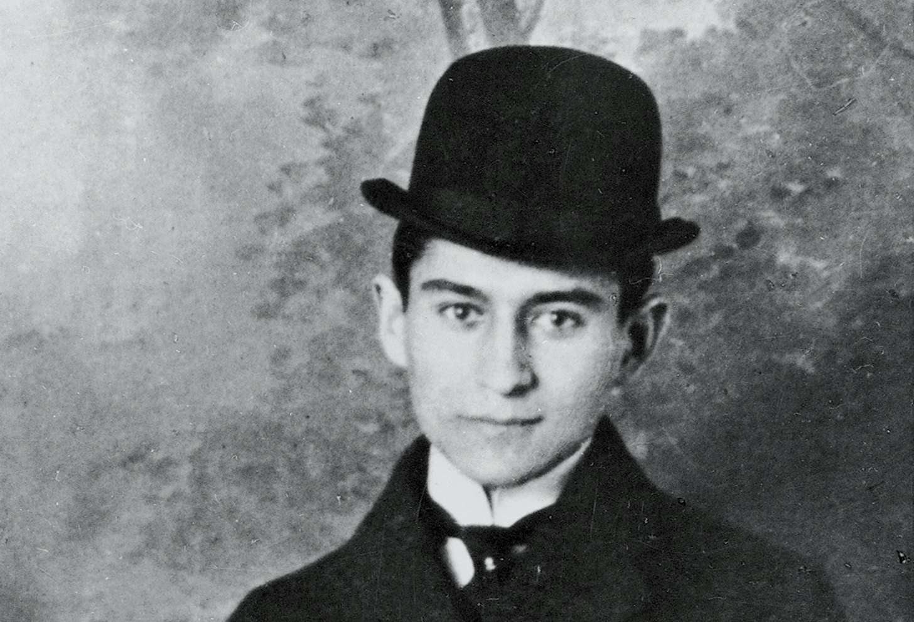
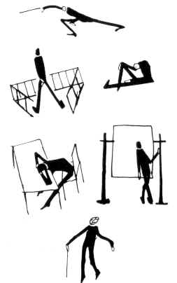

"La comparación del pájaro en mano y ciento volando sólo se puede aplicar aquí muy relativamente. En la mano no tengo nada, volando está todo y sin embargo -así lo determinan las condiciones del combate y las necesidades de la vida- tengo que elegir la nada".
FRANZ KAFKA, Carta al padre;
noviembre, 1919.
FRANZ KAFKA
Introducción
Biografía
Nace el 3 de julio de 1883 en Praga. Su padre, Hermann Kafka (1851-1931), se había casado el año anterior con Julie Löwy (1856-1934), hija de un judío que había conseguido amasar una considerable fortuna gracias a la fabricación de cerveza. Hermann era hijo también de un judío que había tenido menos suerte que su consuegro. Originario de Wossek, un pequeño pueblo al sur de bohemia, se había trasladado de joven a vivir al miserable gueto judío de Josefstadt de Praga. Conoció a Julie: educada, guapa y que, además, por su posición, podía vivir fuera del gueto. Después de casarse Hermann abrión una pequeña tienda de artículos de fantasía. gracias a a ayuda económica de su suegro: empezaba a ver cumplido su sueño de amasar fortuna.
En una vivienda modesta, pero fuera del gueto, nació FRanz Kafka, aunque poco después se volverían a trasladar no muy lejos. Nació Georg, que moriría quince meses después. Para prosperar, Hermann se acercó a los checos de origen alemán, desentendiéndose en gran medida del judaísmo. Esto influiría en Kafka, que era judío sin que la religión se practicara más de lo necesario. La lengua materna era el alemán mientras que la paterna era el checo.
Los contnuos cambios de residencia hicieron que Franz se fuese sintiendo cada vez más desplazado, no tenía apenas tiempo de realizar amistades firmes. Sufrieron la pérdida de otro hermano a los pococs mese de nacer éste, sin que Franz llegara a comprender demasiado todas estas muertes.
Los padres de Kafka acabarían por abrir una mercerñia y poco después se mudarían a la calle del Círculo, y nacieron las hermanas: en 1889 Elli y en 1892 Ottla.
La primera maestra de FRanz fue una gobernanta suiza. n otoño de 1889 comenzó a acudir a la escuela primaria junto al mercado de la carne, al la que acudían hijos de la población alemana de origen judío.
Fue un chico tímido y discreto, que no se comprometió ni con los compañeros alemanes ni con los niños de la escuela checa de enfrente (que atacaban a los otros a la salida de las clases). Comenzó entonces a encerrarse en sí mismo, pues el sitio más seguro era su propio mundo. Inició sus estudios de enseñanza media en el instituto de bachillerato de humanidades de lengua alemana de Praga-Altstadt.
Los relatos
Dentro de toda la selección de textos de ficción breve comprendidos en mi edición -El Club Diógenes, Valdemar- he de decir que dos de ellos me cautivaron profundamente: El artista del hambre y La Condena.
Un artista del hambre
Fue publicado en 1922 en la revista literaria Die neue Rundschau. Reaparecería poco después de su muerte en una antología del autor con el mismo título.
El protagonista es un arquetipo claramente kafkiano: un individuo aislado de los demás, marginal. La historia se sitúa en un circo, centrándose en un ayunador profesional decadente, que muere en una jaula ignorado por el público.
En Europa fueron conocidos
El diario
El proceso
POEMA...
Autorobra, año.
Como curiosidad anecdótica, son muy expresivos -como todo él- los dibujos de Franz Kafka, que se han publicado recogidos en un solo volumen hace relativamente poco:
